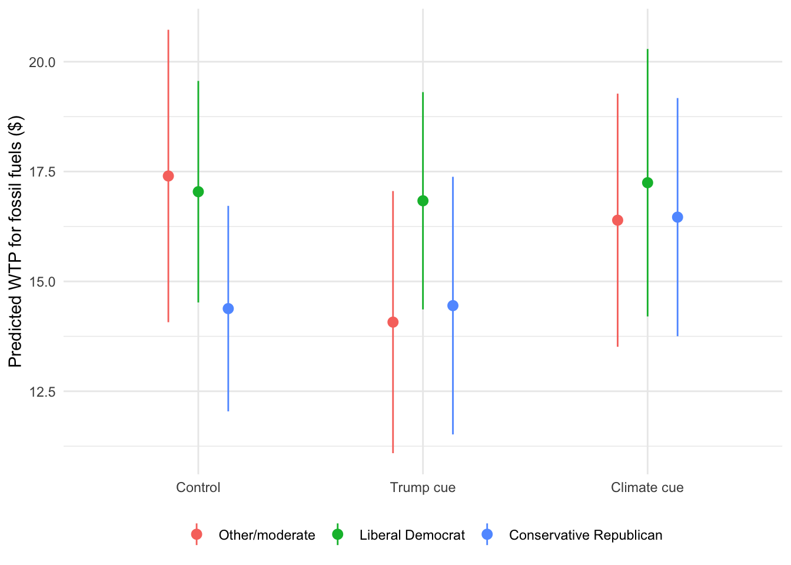
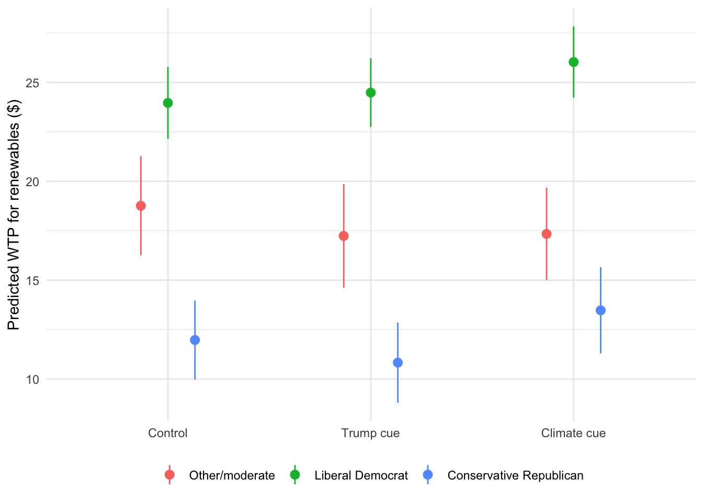

| Priority scale | |
|---|---|
| * p < 0.1, ** p < 0.05, *** p < 0.01 | |
| Trump cue | -0.027 |
| (0.160) | |
| Climate cue | -0.131 |
| (0.154) | |
| Liberal Democrat | 0.657*** |
| (0.126) | |
| Conservative Republican | -1.224*** |
| (0.149) | |
| Trump cue × Liberal Democrat | 0.173 |
| (0.184) | |
| Climate cue × Liberal Democrat | 0.372** |
| (0.176) | |
| Trump cue × Conservative Republican | -0.413* |
| (0.234) | |
| Climate cue × Conservative Republican | 0.075 |
| (0.218) | |
| Age | -0.010*** |
| (0.002) | |
| Male | 0.226*** |
| (0.068) | |
| White | 0.145* |
| (0.078) | |
| Education | 0.041** |
| (0.019) | |
| Income | 0.018 |
| (0.013) | |
| (Intercept) | 5.493*** |
| (0.162) | |
| Num.Obs. | 3113 |
| Adj. R2 | 0.328 |
Supplemental Materials: Cues, Partisanship, and Willingness-to-Pay for Energy
Robustness Check: Controlling for Demographics
The main text models the effect of cue condition, political identity, and their interaction on energy-source prioritization and willingness-to-pay (WTP) without any additional controls. This appendix reports two robustness checks. This section re-estimates every main-text model controlling for age, male, white, education, and income; the following section adds concern about the cost of electricity to those demographic controls. As shown below, the coefficients, their significance, and the substantive conclusions are consistent with the main text.
The results for the energy source-priority scale are shown in Table 1, parallel to the priority-scale table in the main text.

As in the main text, conservative Republicans were more likely to prioritize fossil fuels (b = -1.22, p < .001) and liberal Democrats more likely to prioritize renewables (b = 0.66, p < .001). The interaction terms significant at p \(\leq\) .10 in this specification are:
- Conservative Republican: b = -1.22, p = 0.000
- Liberal Democrat: b = 0.66, p = 0.000
- Climate cue × Liberal Democrat: b = 0.37, p = 0.034
- Trump cue × Conservative Republican: b = -0.41, p = 0.077
The results for the WTP models are shown in Table 2, parallel to the WTP models table in the main text.
| Fossil fuels: Any WTP (logit) | Fossil fuels: Amount, if WTP > $0 (OLS) | Renewables: Amount (OLS) | |
|---|---|---|---|
| * p < 0.1, ** p < 0.05, *** p < 0.01 | |||
| Trump cue | -0.257 | -3.326 | -1.525 |
| (0.210) | (2.268) | (1.853) | |
| Climate cue | 0.088 | -1.007 | -1.423 |
| (0.209) | (2.231) | (1.756) | |
| Liberal Democrat | -0.377** | -0.357 | 5.203*** |
| (0.186) | (2.116) | (1.575) | |
| Conservative Republican | 0.743*** | -3.018 | -6.790*** |
| (0.209) | (2.091) | (1.641) | |
| Trump cue × Liberal Democrat | -0.024 | 3.119 | 2.048 |
| (0.261) | (2.875) | (2.242) | |
| Climate cue × Liberal Democrat | -0.302 | 1.211 | 3.490 |
| (0.262) | (2.977) | (2.176) | |
| Trump cue × Conservative Republican | 0.425 | 3.394 | 0.384 |
| (0.302) | (2.937) | (2.340) | |
| Climate cue × Conservative Republican | -0.044 | 3.088 | 2.927 |
| (0.296) | (2.886) | (2.310) | |
| Age | 0.007** | -0.015 | -0.101*** |
| (0.003) | (0.033) | (0.025) | |
| Male | -0.042 | -0.180 | 0.601 |
| (0.093) | (1.026) | (0.718) | |
| White | -0.261** | 0.959 | 2.549*** |
| (0.106) | (1.201) | (0.854) | |
| Education | -0.023 | 1.166*** | 0.410** |
| (0.027) | (0.291) | (0.207) | |
| Income | -0.031* | 0.310 | 0.496*** |
| (0.019) | (0.211) | (0.144) | |
| (Intercept) | 0.104 | 12.291*** | 18.209*** |
| (0.221) | (2.457) | (1.803) | |
| Num.Obs. | 3113 | 1433 | 3113 |
| Adj. R2 | 0.022 | 0.122 | |
| McFadden's pseudo R2 | 0.066 | ||


For fossil fuels, conservative Republicans remained significantly more likely than the reference group to have any positive WTP (b = 0.74, log-odds scale, p < .001), and liberal Democrats less likely (b = -0.38, p = 0.043). For renewables, liberal Democrats were willing to pay $5.20 more on average (climate condition: an additional $3.49, p = 0.109), and conservative Republicans $6.79 less (p < .001) — the same pattern, and nearly the same magnitudes, reported in the main text without this control.
Summary. Adding demographic controls does not change which cue x political-identity effects are significant, does not change the sign of any coefficient, and shifts coefficient magnitudes only trivially. The main text’s cue and political-identity effects on energy prioritization and WTP are not an artifact of the demographic composition of respondents in each cue/identity group.
Robustness Check: Controlling for Demographics and Concern about Energy Cost
Energy affordability was a salient concern during the period of data collection: respondents’ mean concern about the cost of electricity was 7.88 on a 0 to 10 scale. Because this concern could plausibly confound cue and political-identity effects on prioritization and WTP, this section re-estimates every main-text model controlling for demographics (age, male, white, education, and income) plus concern about energy cost. As shown below, the coefficients, their significance, and the substantive conclusions are consistent with the main text.
The results for the energy source-priority scale are shown in Table 3, parallel to the priority-scale table in the main text.
| Priority scale | |
|---|---|
| * p < 0.1, ** p < 0.05, *** p < 0.01 | |
| Trump cue | -0.030 |
| (0.157) | |
| Climate cue | -0.122 |
| (0.152) | |
| Liberal Democrat | 0.647*** |
| (0.125) | |
| Conservative Republican | -1.221*** |
| (0.148) | |
| Trump cue × Liberal Democrat | 0.176 |
| (0.182) | |
| Climate cue × Liberal Democrat | 0.354** |
| (0.174) | |
| Trump cue × Conservative Republican | -0.412* |
| (0.232) | |
| Climate cue × Conservative Republican | 0.062 |
| (0.217) | |
| Concern about energy cost | 0.041** |
| (0.016) | |
| Age | -0.011*** |
| (0.002) | |
| Male | 0.239*** |
| (0.068) | |
| White | 0.145* |
| (0.078) | |
| Education | 0.044** |
| (0.019) | |
| Income | 0.020 |
| (0.013) | |
| (Intercept) | 5.194*** |
| (0.200) | |
| Num.Obs. | 3113 |
| Adj. R2 | 0.33 |

As in the main text, conservative Republicans were more likely to prioritize fossil fuels (b = -1.22, p < .001) and liberal Democrats more likely to prioritize renewables (b = 0.65, p < .001). The interaction terms significant at p \(\leq\) .10 in this specification are:
- Conservative Republican: b = -1.22, p = 0.000
- Liberal Democrat: b = 0.65, p = 0.000
- Climate cue × Liberal Democrat: b = 0.35, p = 0.042
- Trump cue × Conservative Republican: b = -0.41, p = 0.076
The results for the WTP models are shown in Table 4, parallel to the WTP models table in the main text.
| Fossil fuels: Any WTP (logit) | Fossil fuels: Amount, if WTP > $0 (OLS) | Renewables: Amount (OLS) | |
|---|---|---|---|
| * p < 0.1, ** p < 0.05, *** p < 0.01 | |||
| Trump cue | -0.252 | -3.410 | -1.494 |
| (0.208) | (2.257) | (1.862) | |
| Climate cue | 0.074 | -1.148 | -1.507 |
| (0.206) | (2.230) | (1.751) | |
| Liberal Democrat | -0.362* | -0.010 | 5.299*** |
| (0.185) | (2.097) | (1.575) | |
| Conservative Republican | 0.742*** | -2.897 | -6.818*** |
| (0.208) | (2.076) | (1.641) | |
| Trump cue × Liberal Democrat | -0.029 | 3.186 | 2.015 |
| (0.259) | (2.870) | (2.248) | |
| Climate cue × Liberal Democrat | -0.273 | 1.426 | 3.660* |
| (0.260) | (2.970) | (2.170) | |
| Trump cue × Conservative Republican | 0.424 | 3.506 | 0.373 |
| (0.301) | (2.918) | (2.345) | |
| Climate cue × Conservative Republican | -0.024 | 3.338 | 3.053 |
| (0.294) | (2.876) | (2.302) | |
| Concern about energy cost | -0.067*** | -0.641*** | -0.381** |
| (0.022) | (0.224) | (0.166) | |
| Age | 0.008** | -0.002 | -0.093*** |
| (0.003) | (0.034) | (0.025) | |
| Male | -0.062 | -0.430 | 0.485 |
| (0.093) | (1.035) | (0.718) | |
| White | -0.262** | 0.969 | 2.552*** |
| (0.106) | (1.199) | (0.854) | |
| Education | -0.027 | 1.148*** | 0.389* |
| (0.027) | (0.292) | (0.208) | |
| Income | -0.035* | 0.271 | 0.473*** |
| (0.019) | (0.210) | (0.145) | |
| (Intercept) | 0.593** | 16.788*** | 20.989*** |
| (0.271) | (2.958) | (2.146) | |
| Num.Obs. | 3113 | 1433 | 3113 |
| Adj. R2 | 0.029 | 0.123 | |
| McFadden's pseudo R2 | 0.069 | ||


For fossil fuels, conservative Republicans remained significantly more likely than the reference group to have any positive WTP (b = 0.74, log-odds scale, p < .001), and liberal Democrats less likely (b = -0.36, p = 0.050). For renewables, liberal Democrats were willing to pay $5.30 more on average (climate condition: an additional $3.66, p = 0.092), and conservative Republicans $6.82 less (p < .001) — the same pattern, and nearly the same magnitudes, reported in the main text without this control.
Summary. Adding concern about energy cost as a control does not change which cue x political-identity effects are significant, does not change the sign of any coefficient, and shifts coefficient magnitudes only trivially. The main text’s cue and political-identity effects on energy prioritization and WTP are not an artifact of differential cost sensitivity across respondents.
Robustness Check: Concern about Energy Cost Interacted with Cues and Political Identity
The prior section controls for concern about energy cost, entering it additively. This section asks whether the cost-concern effect itself varies by cue condition or political identity: every main-text model is re-estimated with concern about energy cost interacted with both cue conditions and with political identity, in addition to the demographic controls (age, male, white, education, income).
The results for the energy source-priority scale are shown in Table 5.
| Priority scale | |
|---|---|
| * p < 0.1, ** p < 0.05, *** p < 0.01 | |
| Trump cue | 0.241 |
| (0.333) | |
| Climate cue | 0.199 |
| (0.317) | |
| Liberal Democrat | 1.021*** |
| (0.285) | |
| Conservative Republican | -0.199 |
| (0.352) | |
| Trump cue × Liberal Democrat | 0.188 |
| (0.180) | |
| Climate cue × Liberal Democrat | 0.351** |
| (0.174) | |
| Trump cue × Conservative Republican | -0.398* |
| (0.229) | |
| Climate cue × Conservative Republican | 0.061 |
| (0.215) | |
| Concern about energy cost | 0.134*** |
| (0.034) | |
| Trump cue × Concern about energy cost | -0.036 |
| (0.039) | |
| Climate cue × Concern about energy cost | -0.040 |
| (0.037) | |
| Concern about energy cost × Liberal Democrat | -0.050 |
| (0.033) | |
| Concern about energy cost × Conservative Republican | -0.133*** |
| (0.042) | |
| Age | -0.011*** |
| (0.002) | |
| Male | 0.241*** |
| (0.068) | |
| White | 0.151* |
| (0.078) | |
| Education | 0.044** |
| (0.019) | |
| Income | 0.020 |
| (0.013) | |
| (Intercept) | 4.464*** |
| (0.298) | |
| Num.Obs. | 3113 |
| Adj. R2 | 0.335 |
Concern about energy cost had a significant positive effect on prioritizing fossil fuels over renewables (b = 0.13, p < .001). This effect was significantly weaker for conservative Republicans (b = -0.13, p = 0.001), consistent with cost concern already being incorporated into conservative Republicans’ fossil-fuel-favoring baseline. The concern-about-cost terms significant at p \(\leq\) .10 in this specification are:
- Concern about energy cost: b = 0.13, p = 0.000
- Concern about energy cost × Conservative Republican: b = -0.13, p = 0.001
The results for the WTP models are shown in Table 6.
| Fossil fuels: Any WTP (logit) | Fossil fuels: Amount, if WTP > $0 (OLS) | Renewables: Amount (OLS) | |
|---|---|---|---|
| * p < 0.1, ** p < 0.05, *** p < 0.01 | |||
| Trump cue | -0.128 | -11.261** | -2.327 |
| (0.447) | (4.676) | (3.364) | |
| Climate cue | 0.054 | -5.880 | -2.915 |
| (0.461) | (4.428) | (3.459) | |
| Liberal Democrat | -1.328*** | -1.888 | 5.112 |
| (0.437) | (4.558) | (3.385) | |
| Conservative Republican | -0.183 | -3.202 | -5.418 |
| (0.485) | (4.449) | (3.503) | |
| Trump cue × Liberal Democrat | -0.032 | 2.468 | 1.990 |
| (0.259) | (2.850) | (2.254) | |
| Climate cue × Liberal Democrat | -0.273 | 1.008 | 3.533 |
| (0.260) | (2.992) | (2.174) | |
| Trump cue × Conservative Republican | 0.418 | 3.040 | 0.388 |
| (0.301) | (2.928) | (2.347) | |
| Climate cue × Conservative Republican | -0.015 | 3.099 | 3.018 |
| (0.293) | (2.901) | (2.300) | |
| Concern about energy cost | -0.149*** | -1.294*** | -0.412 |
| (0.050) | (0.491) | (0.386) | |
| Trump cue × Concern about energy cost | -0.015 | 1.074** | 0.107 |
| (0.051) | (0.534) | (0.385) | |
| Climate cue × Concern about energy cost | 0.001 | 0.642 | 0.187 |
| (0.053) | (0.512) | (0.399) | |
| Concern about energy cost × Liberal Democrat | 0.124** | 0.282 | 0.024 |
| (0.051) | (0.514) | (0.408) | |
| Concern about energy cost × Conservative Republican | 0.119** | 0.073 | -0.181 |
| (0.057) | (0.497) | (0.416) | |
| Age | 0.008** | -0.002 | -0.092*** |
| (0.003) | (0.034) | (0.025) | |
| Male | -0.065 | -0.373 | 0.482 |
| (0.093) | (1.038) | (0.716) | |
| White | -0.260** | 0.802 | 2.541*** |
| (0.105) | (1.208) | (0.853) | |
| Education | -0.029 | 1.150*** | 0.387* |
| (0.027) | (0.291) | (0.208) | |
| Income | -0.033* | 0.283 | 0.478*** |
| (0.019) | (0.210) | (0.145) | |
| (Intercept) | 1.235*** | 21.574*** | 21.209*** |
| (0.445) | (4.462) | (3.272) | |
| Num.Obs. | 3113 | 1433 | 3113 |
| Adj. R2 | 0.03 | 0.123 | |
| McFadden's pseudo R2 | 0.071 | ||
For fossil fuels, concern about energy cost lowered the odds of any positive WTP (b = -0.15, log-odds scale, p = 0.003), but this penalty was significantly smaller for both liberal Democrats (b = 0.12, p = 0.016) and conservative Republicans (b = 0.12, p = 0.038) relative to the reference group. Among those with any positive fossil-fuel WTP, concern about energy cost lowered the amount they were willing to pay (b = -1.29, p = 0.008), and this penalty was significantly offset under the Trump cue (b = 1.07, p = 0.045). For renewables, none of the concern-about-cost terms reached significance. The concern-about-cost terms significant at p \(\leq\) .10 in each model are:
Fossil fuels, any positive WTP (logit):
- Concern about energy cost: b = -0.15, p = 0.003
- Concern about energy cost × Liberal Democrat: b = 0.12, p = 0.016
- Concern about energy cost × Conservative Republican: b = 0.12, p = 0.038
Fossil fuels, amount if WTP > $0 (OLS):
- Concern about energy cost: b = -1.29, p = 0.008
- Trump cue × Concern about energy cost: b = 1.07, p = 0.045
Renewables, amount (OLS):
- None of the concern-about-cost terms were significant at p \(\leq\) .10.
Summary. Concern about energy cost is not simply a nuisance control: it has a significant, partisanship-moderated relationship with fossil-fuel prioritization and WTP (weaker for both liberal Democrats and conservative Republicans than for the reference group), and its dampening effect on fossil-fuel WTP amount is significantly offset under the Trump cue. It shows no such moderated relationship with renewable-energy WTP. None of this changes the sign or significance of the main-text cue x political-identity effects (Table 3 and Table 4), which are retained in this specification exactly as reported in the prior section.